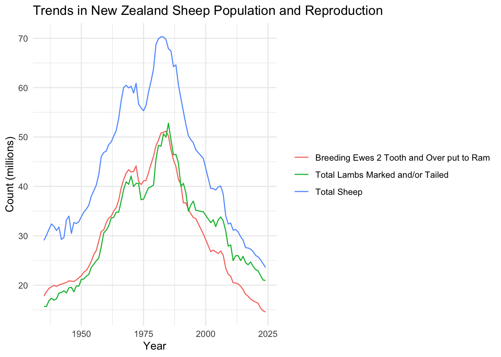

The goal of this portfolio piece is to practice applying a complete data analysis workflow to a real-world TidyTuesday dataset, moving from data import and cleaning to visualization and interpretation. Using long-term agricultural data from New Zealand, I focus on building a clean, reproducible workflow in R and creating clear visualizations that communicate meaningful trends. This project helps strengthen my confidence in independently exploring and interpreting unfamiliar datasets.
## ---- Compiling #TidyTuesday Information for 2026-02-17 ----
## --- There is 1 file available ---
##
##
## ── Downloading files ───────────────────────────────────────────────────────────
##
## 1 of 1: "dataset.csv"map(tt, glimpse)## Rows: 4,739
## Columns: 5
## $ year_ended_june <dbl> 1935, 1935, 1935, 1935, 1935, 1935, 1935, 1935, 1935, …
## $ measure <chr> "Total Area of Farms", "Breeding Ewes 2 Tooth and Over…
## $ value <dbl> 17443800, 17812400, 29077000, 15689000, 91212, 161475,…
## $ value_unit <chr> "number", "number", "number", "number", "number", "num…
## $ value_label <chr> "Hectares", "Number of sheep", "Number of sheep", "Num…## $dataset
## # A tibble: 4,739 × 5
## year_ended_june measure value value_unit value_label
## <dbl> <chr> <dbl> <chr> <chr>
## 1 1935 Total Area of Farms 1.74e7 number Hectares
## 2 1935 Breeding Ewes 2 Tooth and Over… 1.78e7 number Number of …
## 3 1935 Total Sheep 2.91e7 number Number of …
## 4 1935 Total Lambs Marked and/or Tail… 1.57e7 number Number of …
## 5 1935 Wheat (area sown) 9.12e4 number Hectares
## 6 1935 Wheat (yield) 1.61e5 number Tonnes
## 7 1935 Oats (yield) 3.43e4 number Tonnes
## 8 1935 Barley (yield) 1.10e4 number Tonnes
## 9 1935 Maize (yield) 9.48e3 number Tonnes
## 10 1936 Total Area of Farms 1.75e7 number Hectares
## # ℹ 4,729 more rowsdf <- tt$dataset %>%
janitor::clean_names() #changes names to snake_case (not needed for this dataset, but trying to make it a part of my workflow)
glimpse(df)## Rows: 4,739
## Columns: 5
## $ year_ended_june <dbl> 1935, 1935, 1935, 1935, 1935, 1935, 1935, 1935, 1935, …
## $ measure <chr> "Total Area of Farms", "Breeding Ewes 2 Tooth and Over…
## $ value <dbl> 17443800, 17812400, 29077000, 15689000, 91212, 161475,…
## $ value_unit <chr> "number", "number", "number", "number", "number", "num…
## $ value_label <chr> "Hectares", "Number of sheep", "Number of sheep", "Num…df %>% count(measure, sort = TRUE)## # A tibble: 193 × 2
## measure n
## <chr> <int>
## 1 Total Lambs Marked and/or Tailed 86
## 2 Total Sheep 86
## 3 Barley (yield) 85
## 4 Total Area of Farms 85
## 5 Wheat (yield) 85
## 6 Maize (yield) 84
## 7 Oats (yield) 84
## 8 Breeding Ewes 2 Tooth and Over put to Ram 83
## 9 Number of Farm Holdings 81
## 10 Rising 1 Year Old Dairy Heifers and Heifer Calves 73
## # ℹ 183 more rowsThis visualization shows a steady long-term rise and fall in New Zealand’s sheep industry. Sheep populations, breeded ewes, and lamb numbers all increased steadily until peaking around the early 1980s, followed by a substantial decline over the following decades. The trends are all very similar, suggesting that the overall sheep population and reproduction rates changed together.
selected_measures <- c(
"Total Sheep",
"Total Lambs Marked and/or Tailed",
"Breeding Ewes 2 Tooth and Over put to Ram"
)
df_compare <- df %>%
filter(measure %in% selected_measures)
ggplot(df_compare,
aes(x = year_ended_june,
y = value / 1e6, #change y-axis so its not in scientific notation, but in millions
color = measure)) +
geom_line() +
labs(
title = "Trends in New Zealand Sheep Population and Reproduction",
x = "Year",
y = "Count (millions)",
color = NULL
) +
theme_minimal()